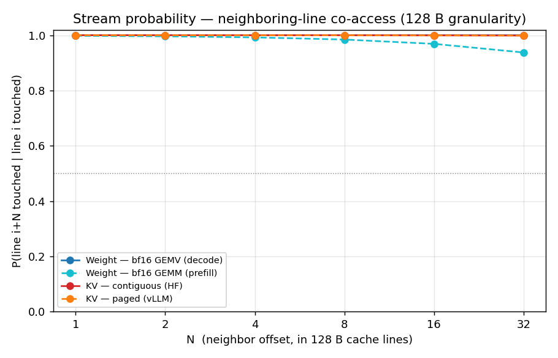
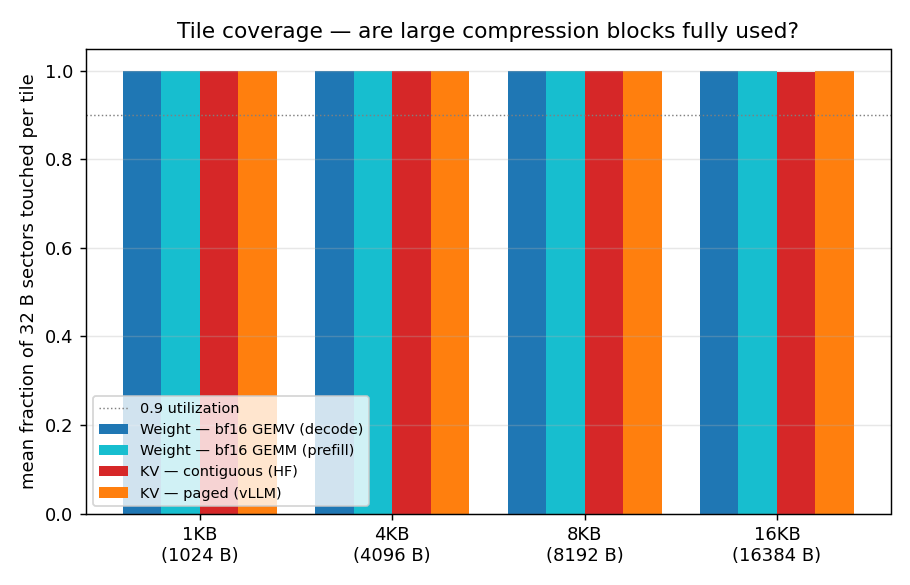
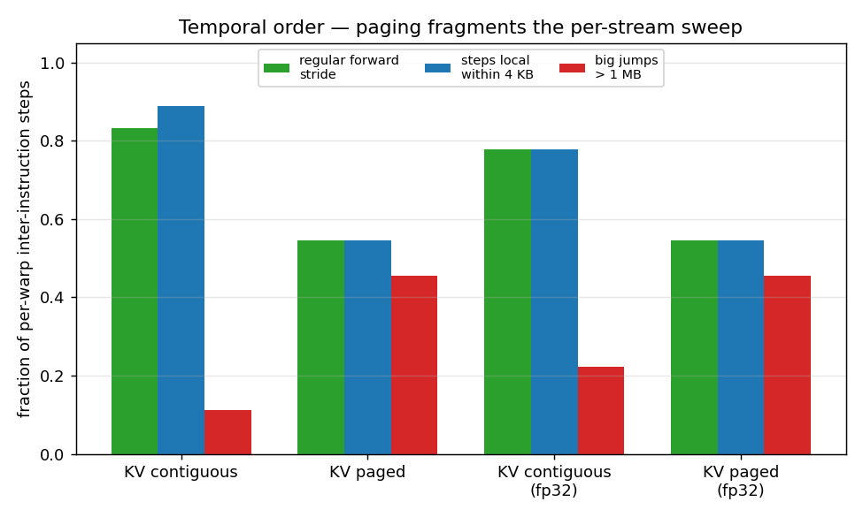

Do LLM Weights & KV Cache Stream?
Verifying whether model weights and the KV cache are accessed as large contiguous tile streams on an NVIDIA RTX 5080 — evidence for or against large-block, high-ratio, pipelined HBM decompression.
§1Summary of results
One question drives everything: if a cache line of a weight tensor or the KV cache is touched, how likely is a neighboring line to be touched too? Across every workload and every granularity from 32 B to 8 KB, the answer is: very likely.
✓ Verdict: Weights and KV cache both STREAM
Random-vs-Streaming verdict matrix
Hover any cell for the underlying numbers. Streaming = P(i+1) ≥ 0.5 and median contiguous run ≥ 4 lines. Random otherwise.
The random-gather control correctly flips to Random at 4–8 KB — it densely fills a tiny buffer so it looks stream-like only at fine granularity. That sanity-checks the metric: it is not labelling everything "Streaming".
§2Methodology
The guide's preferred recipe — trace a live PyTorch process and map every address
back to a weight/KV data_ptr() range — is impossible on this stack:
NVBit 1.7.6/1.8 emit zero trace lines against PyTorch cu128 on driver 590.48 (the launch
interceptor misses its kernels). Standalone CUDA/cuBLAS binaries trace perfectly. So we trace
proxy kernels whose tensor role is known by construction — the W buffer
is the weight, the K/V pool is the KV cache — making attribution exact, and we
dimension each proxy from a real model's tensor table.
data_ptr/shape/stride/dtype from GPT-2 & Qwen2.5-1.5B.mem_trace logs 32 lane addresses per warp-instruction (pre-coalescer).Workloads & what each one models
| Workload | Role | Kernel (real SASS) | warp-insts | load addrs |
|---|
The two real models we dimensioned from
| Model | dtype | weights | layers | q heads | kv heads | head_dim | KV layout |
|---|---|---|---|---|---|---|---|
| GPT-2 | fp32 | 474.7 MiB | 12 | 12 | 12 (MHA) | 64 | [1,12,S,64] contiguous |
| Qwen2.5-1.5B-Instruct | bf16 | 2944.4 MiB | 28 | 12 | 2 (GQA) | 128 | [1,2,S,128] contiguous |
- Granularity IDs:
line_id = addr >> kwith k = 5/6/7/10/12/13 for 32B/64B/128B/1KB/4KB/8KB. - Run length = longest contiguous span of touched line IDs (are blocks fully populated?).
- Tile coverage = fraction of 32 B sectors actually touched inside each tile (are fetched blocks wasted?).
- Temporal stride = per-warp inter-instruction byte delta (does the sweep move forward in order?).
§3Interactive explorer
Compare workloads directly. Click a legend chip to show/hide a series.
Stream probability — P(line i+N touched | line i touched)
Tile coverage — are large compression blocks fully used?
Bars at 1 / 4 / 8 / 16 KB. Near 1.0 everywhere = a fetched block is almost entirely consumed.
Temporal order — contiguous (HF) vs paged (vLLM) KV
Same spatial footprint, different access order. Paging fragments each per-head sweep at block boundaries: the regular-stride fraction falls and big >1 MB jumps rise.
§4Weight workloads
Weights are read by the matmul kernels the real models actually launch (verified by SASS name in nsys traces). Prefill uses tiled GEMM; batch-1 decode collapses to a GEMV that streams the whole weight matrix to multiply one activation vector.
§5KV-cache workloads
A decode step attends one new query against all past keys then values. We model both the
HuggingFace contiguous layout ([heads, seq, head_dim]) and the vLLM
paged layout (16-token blocks gathered through a block table), in bf16 (Qwen-shaped)
and fp32 (GPT-2-shaped).
§6Control workload
A negative control to prove the metric can say "Random". A random-gather kernel scatters reads across a buffer.
§7Compression verdict & recommended block size
Pick a candidate block size to see measured coverage per workload. High coverage means compressing & fetching whole blocks wastes almost no bandwidth.
| Tensor | Behavior | Recommended block | Why |
|---|---|---|---|
| Weights | Streaming | 8–16 KB | Largest tensors, swept fully and once; coverage 1.0 through 16 KB; deepest latency amortization, least metadata. |
| KV cache (contiguous) | Streaming | 4 KB | Coverage 1.0 to 16 KB too, but 4 KB matches the per-head per-token slab and bounds buffer count. |
| KV cache (paged) | Streaming | 2–4 KB | Aligns with vLLM's 16-token blocks (16×128×2 B = 4 KB for one bf16 GQA head). |
§8Caveats
- Proxy, not live trace. Live PyTorch is un-traceable by NVBit here (driver 590.48 vs ≤575). Proxies carry byte-identical SASS / access patterns and known tensor roles, but are not the literal production process.
- Pre-coalescer virtual addresses. NVBit logs the 32 issued lane addresses, not post-coalescer DRAM
requests, and not L1/L2 hit/miss (use
ncufor that). Physical channel interleave is invisible. - Spatial vs temporal. Footprint contiguity (the compression-relevant property) is robust; the per-warp temporal stride is reported separately and is sensitive to warp scheduling and q/K/V allocation gaps.
- Single decode step, modest seq. seq = 1024, batch = 1. Larger batch turns decode GEMV → GEMM; the streaming verdict only strengthens.
§9Reproduce
# in 01_workloads/02_address_trace/ , using the cu128 venv python PY=../../02_tools/venv_gpt2/bin/python # 1. tensor address-range DB (downloads GPT-2 + Qwen2.5-1.5B) $PY dump_tensor_ranges.py --model gpt2 -o tensor_ranges_gpt2.json $PY dump_tensor_ranges.py --model qwen -o tensor_ranges_qwen.json # 2. build sm_120 proxies and collect NVBit traces -> results/*.npz make # uses /usr/local/cuda-13.0/bin/nvcc bash run_guide_traces.sh # 3. stream statistics + figures bash run_stream_stats.sh $PY plot_stream_metrics.py --results results --out ../../00_doc/02_report
Static figures rendered by the pipeline (the explorer above is driven by the same data):


